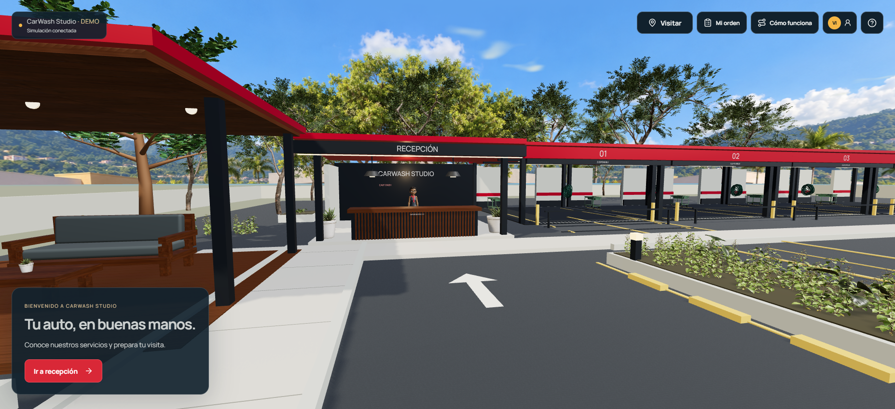
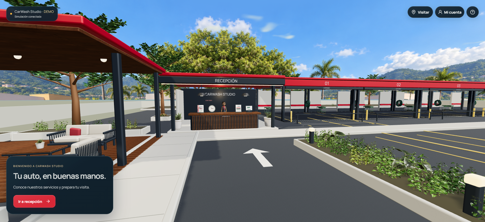
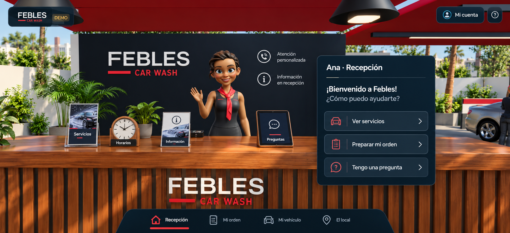
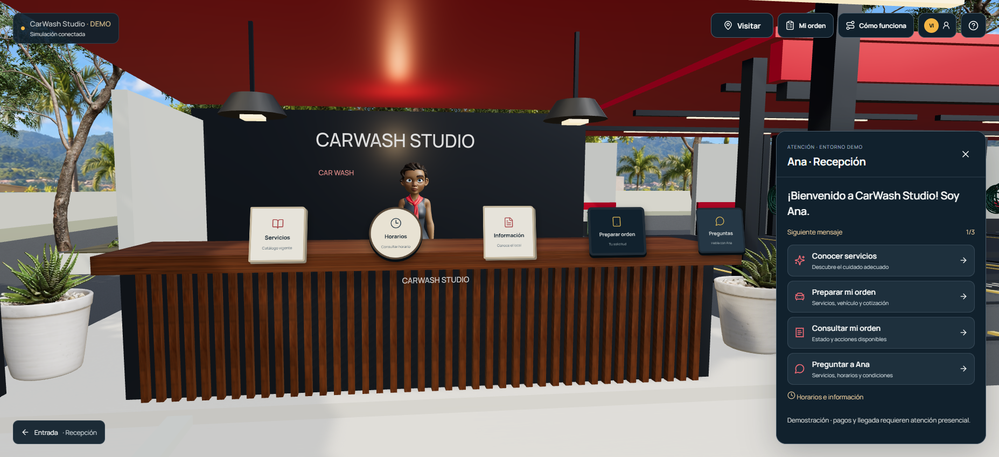
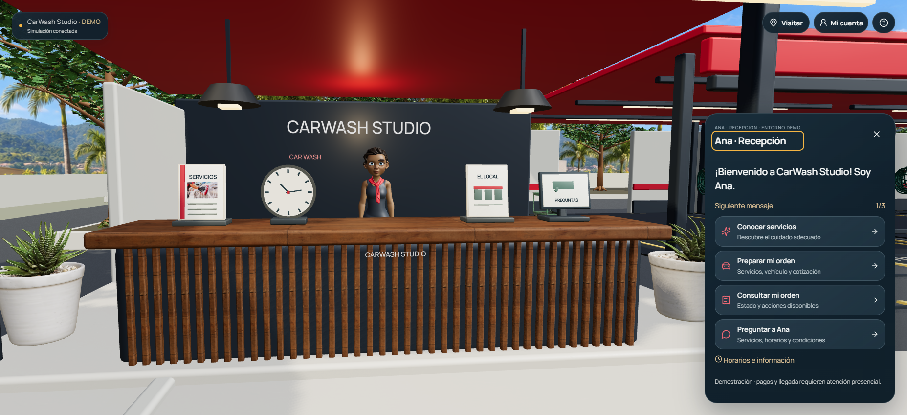

Entrada y recepción · zona piloto
Referencia, estado anterior y versión final a 1855 × 848 px. Las imágenes de ejecución proceden de un navegador real, con operación vacía y luz soleada simulada. Abre cada imagen para verla a su resolución original.
La diferencia total incluye trabajo coordinado de tres chats. Este piloto aporta los cuatro objetos del mostrador, sus controles, el contrato de apoyo vegetal y la actualización de skills/perfiles. Fondo, plantas, mobiliario y cámara fueron integrados con sus responsables. La aceptación artística sigue pendiente.
Entrada
 Referencia proporcionadaImagen conceptual, no ejecución. Fondo urbano y vegetación densa.
Referencia proporcionadaImagen conceptual, no ejecución. Fondo urbano y vegetación densa.

AntesBundle index-BPiWgbIX.js. Operación vacía; no se añadieron vehículos para imitar el concepto.

DespuésZonas de tierra y plantaciones integradas. Bundle y hashes en after/capture.json.
Diferencias pendientes: el fondo montañoso no equivale al concepto urbano. La forma y densidad de las copas también difieren. Las bahías reflejan la operación vacía, y la marca procede de la configuración del negocio.
Recepción

Referencia proporcionadaCuatro objetos reconocibles; rostro, mano y centro del mostrador libres.

AntesCinco displays HTML. El reloj y la tarjeta central compiten con el torso de Ana.

DespuésCatálogo, reloj, folleto del local y tableta. Preparar orden continúa en el diálogo.
Diferencias pendientes: la escala de Ana, el acabado del mobiliario y la identidad de pared no son una réplica fotográfica del concepto. El gesto exacto de saludo y las nubes pueden variar entre capturas. Las imágenes de recepción se toman en reposo; no acreditan por sí solas naturalidad de movimiento.
Controles del mostrador, escritorio · Controles del mostrador, 390 × 844 · Controles a 650 px
Mostrador a 390 × 844 y 650 × 900 px
La cámara ocupa el mismo destino. La versión integrada amplía el FOV móvil de 61° a 98° para mantener los cuatro objetos físicos dentro del encuadre. La baseline móvil cargó index-tzJPLZKH.js; no es el mismo bundle que la baseline de escritorio.